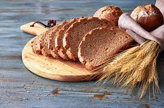
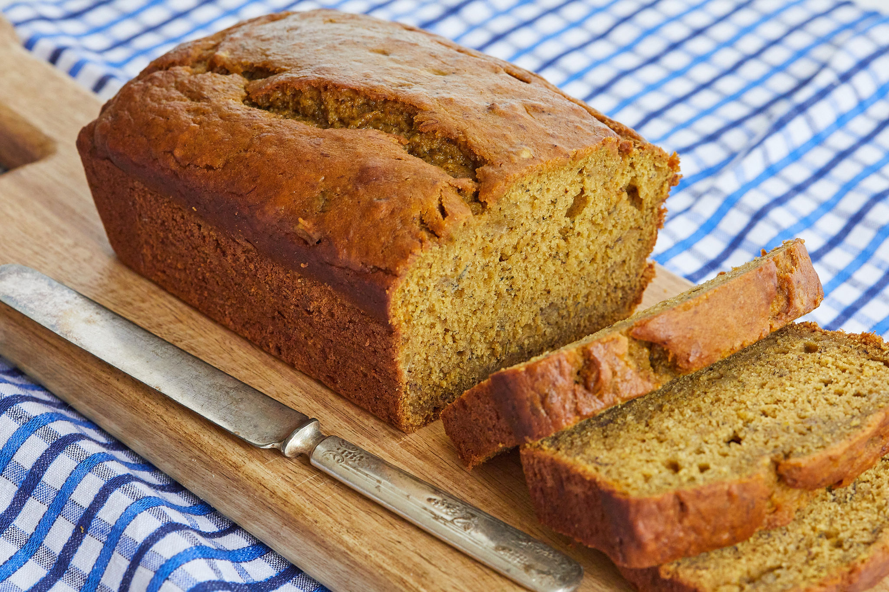

100% whole wheat bread recipe with step by step photos and video. This foolproof recipe gives you a really good soft wheat bread with the ingredients you have at home.
This is a soft wholemeal bread with a light crumb. The recipe does not have the typical denseness and heaviness which is found in 100% whole wheat bread. There is a special & secret ingredient in the recipe that helps in the gluten development.
I embarked upon this ingredient one day when I was making naan. Typically the Indian Naan and Bhatura have one ingredient that helps in the leavening process and gives a soft texture, even when the naans are made without yeast. I thought why not try using this ingredient in a bread. And it worked like a charm.
This is a soft wholemeal bread with a light crumb. The recipe does not have the typical denseness and heaviness which is found in 100% whole wheat bread. There is a special & secret ingredient in the recipe that helps in the gluten development.
I embarked upon this ingredient one day when I was making naan. Typically the Indian Naan and Bhatura have one ingredient that helps in the leavening process and gives a soft texture, even when the naans are made without yeast. I thought why not try using this ingredient in a bread. And it worked like a charm.
View recipie
 Since by now I bake a lot of bread at home, I have become pretty good at baking bread. The other side is the bread recipes never get to the blog. I just don’t get the time to take pics and especially the step by step pics.
Since by now I bake a lot of bread at home, I have become pretty good at baking bread. The other side is the bread recipes never get to the blog. I just don’t get the time to take pics and especially the step by step pics. I have baked buns, rolls, artisan breads and still enjoying baking breads at home. Yet, I shall see to it that I do add different bread recipes to the blog so that you can also bake beautiful breads in your own kitchen. Let’s get down to business. Watch me make the recipe below:
View recipie

After I posted this recipe, it was tried and tested successfully by many readers. This banana bread recipe is made with whole wheat flour (wholemeal flour) but all-purpose flour can be substituted instead.
Banana bread is an all-time favorite and I often make this quick bread with overripe bananas. Since this is one of the most popular bread recipe on the blog, I have updated this post with step by step pics. Based on this recipe, I have also shared an awesome Banana cake and a Pumpkin bread.
Banana bread is an all-time favorite and I often make this quick bread with overripe bananas. Since this is one of the most popular bread recipe on the blog, I have updated this post with step by step pics. Based on this recipe, I have also shared an awesome Banana cake and a Pumpkin bread.